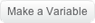
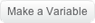

Manter a pontuação
Crie uma variável para manter o controle de pontuação.
Escolha e  Digite o nome "Pontuação" e clique em OK:
e  Digite o nome "Pontuação" e clique em OK: 
Novos blocos aparecerão e a variável Pontuação será exibida no Palco: 
Este é um exemplo de script para manter a pontuação: